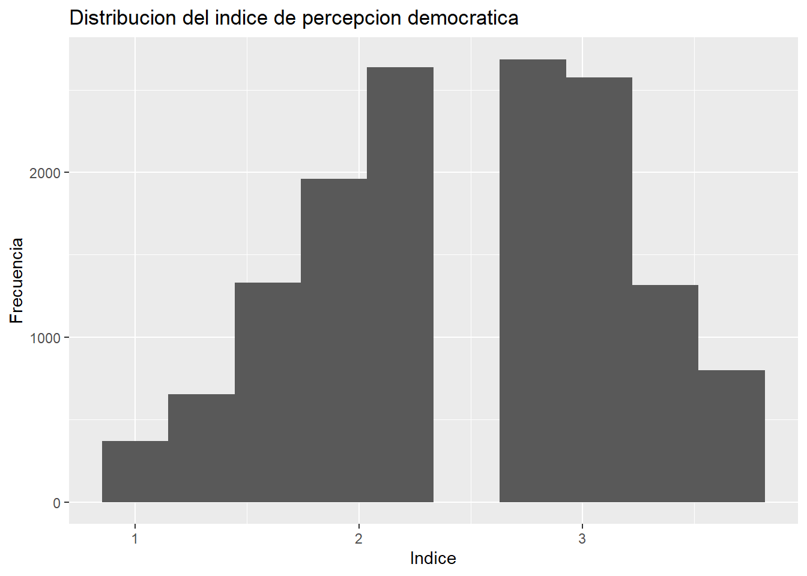
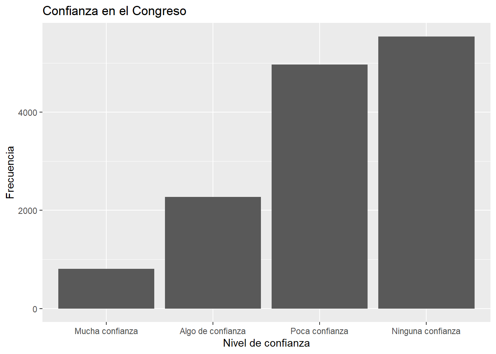
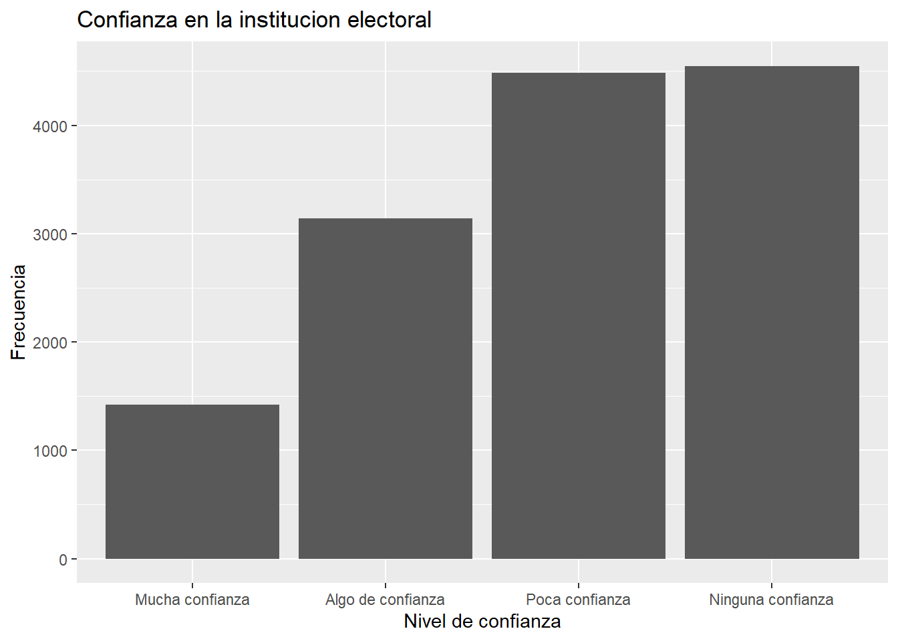
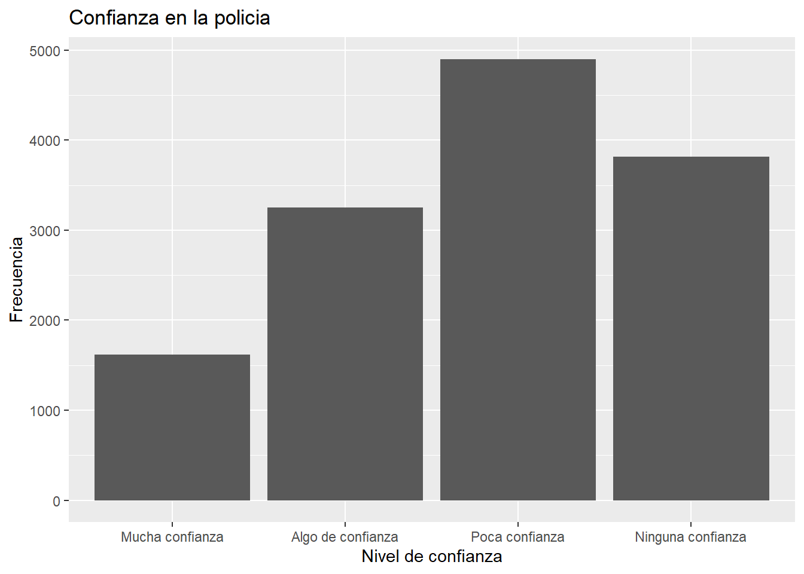
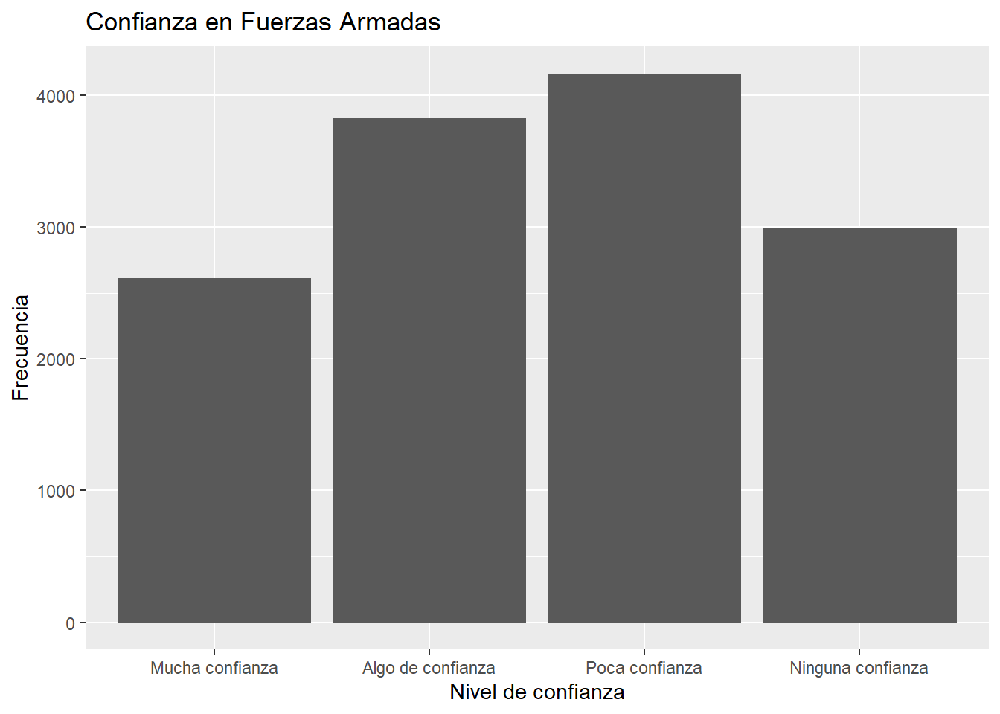
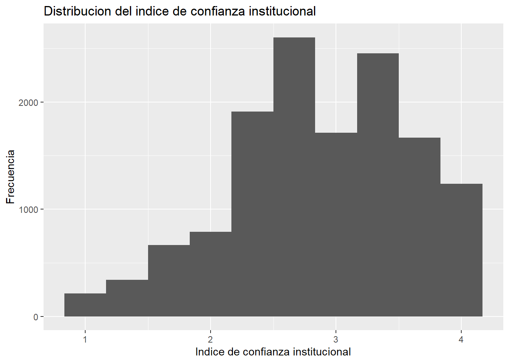
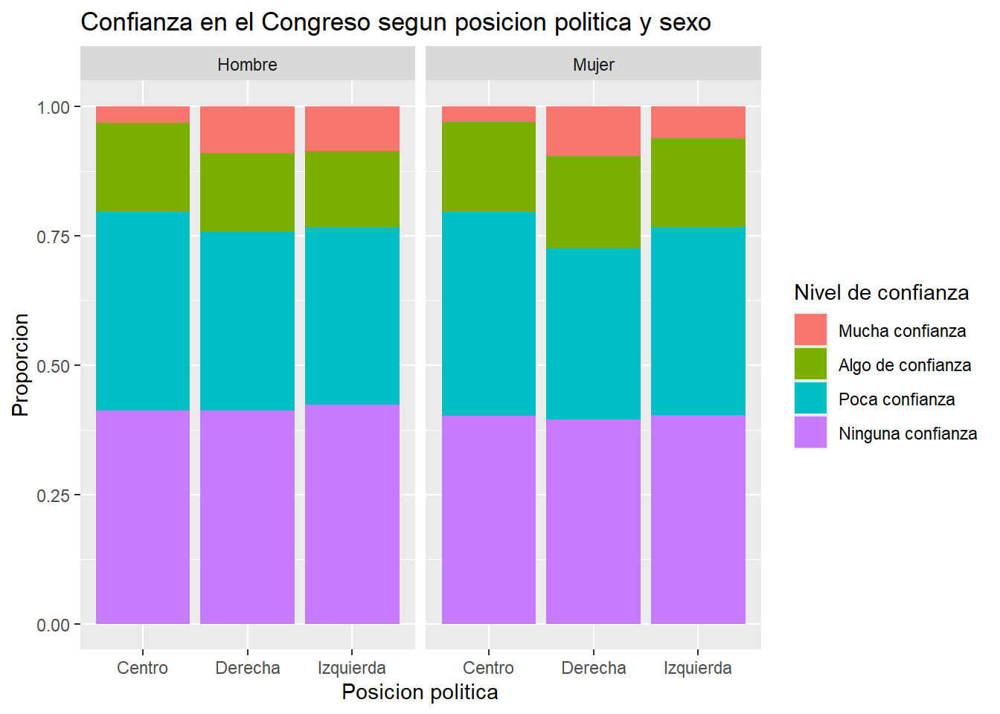

## package 'summarytools' successfully unpacked and MD5 sums checked
##
## The downloaded binary packages are in
## C:\Users\hyoud\AppData\Local\Temp\Rtmp0EpEkS\downloaded_packagesPractico 3 - Tomas Fuentes
La confianza institucional como forma de legitimidad democratica en America Latina, un analisis segun posicion politica
Introduccion
Dentro de nuestro contexto de America Latina, hemos presenciado una alta variabilidad en los tipos de gobierno dentro de la region, existiendo una disparidad constante entre los sectores politicos de izquierda y los sectores politicos de derecha. Teniendo en cuenta esto, se observa que en los ultimos años los gobiernos de cada pais van cambiando de un sector a otro dependiendo de sus contextos especificos de cada pais. Tenemos los ejemplos de Brazil de un paso de un gobierno de derecha a izquierda, Chile de un gobierno de derecha a izquierda, o teniendo en cuenta mas el aspecto contemporaneos cambios de izquierda a derecha. La crecion de un indice nos permite aproximar dimensiones de legitimidad y satisfacción democrática mediante confianza institucional
Para efectos de este trabajo entonces, buscamos aproximarnos, a demostrar como la confianza en las instituciones pueden permitir la posibilidad de que se genere una mayor legitimidad y satisfaccion con el sistema democratico. Ya planteaba Cereceda-Marambio que los regímenes democráticos se encuentran ligados al prestigio de las instituciones, dado que cada sociedad posee un orden particular constituido por diversas instituciones políticas, económicas, sociales y culturales que cumplen determinadas funciones, por lo que es importante la valoración que dan los ciudadanos a estas instituciones como parte misma del proceso de construcción de la democracia. (Cereceda-Marambio and Torres-Solís (2017))
Para el desarrollo de esta investigación, se utilizará como fuente de datos la encuesta de Latinobarómetro correspondiente al año 2020. A partir de esta base de datos, se construirá un índice de confianza institucional compuesto por variables asociadas a la confianza en instituciones políticas y estatales, tales como el Congreso, las Fuerzas Armadas, la policía, el Poder Judicial y la institución electoral. El objetivo será analizar cómo varía este índice según la posición política de los encuestados.
Elegimos las variables a utilizar
## p13st_d
## ""
## p13st_h
## "P13ST.H Confianza en: La institución Electoral del país"
## P13STGBS_A
## "P13STGBS.A Confianza en las Fuerzas Armadas"
## P13STGBS_B
## "P13STGBS.B Confianza en la Policía / Carabineros"
## p13st_f
## ""
## sexo
## ""
## p18st
## "P18ST Escala Izquierda-Derecha"Descriptivos de nuestras variables
Posicion Politica
| posicion_politica | n | porcentaje |
|---|---|---|
| Centro | 6277 | 46.18 |
| Derecha | 3655 | 26.89 |
| Izquierda | 3659 | 26.92 |

Variable Sexo
| sexo | n | porcentaje |
|---|---|---|
| 1 | 6912 | 50.86 |
| 2 | 6679 | 49.14 |
Variable confianza en el poder judicial
| confianza_poder_judicial | n | porcentaje |
|---|---|---|
| Mucha confianza | 1007 | 7.41 |
| Algo de confianza | 2665 | 19.61 |
| Poca confianza | 4938 | 36.33 |
| Ninguna confianza | 4981 | 36.65 |

Variable Congreso
| confianza_congreso | n | porcentaje |
|---|---|---|
| Mucha confianza | 807 | 5.94 |
| Algo de confianza | 2275 | 16.74 |
| Poca confianza | 4969 | 36.56 |
| Ninguna confianza | 5540 | 40.76 |

Variable Institucion Electoral
| confianza_institucion_electoral | n | porcentaje |
|---|---|---|
| Mucha confianza | 1419 | 10.44 |
| Algo de confianza | 3143 | 23.13 |
| Poca confianza | 4481 | 32.97 |
| Ninguna confianza | 4548 | 33.46 |

Variable Policia
| confianza_policia | n | porcentaje |
|---|---|---|
| Mucha confianza | 1618 | 11.90 |
| Algo de confianza | 3252 | 23.93 |
| Poca confianza | 4902 | 36.07 |
| Ninguna confianza | 3819 | 28.10 |

Variable Fuerzas Armadas
| confianza_ffaa | n | porcentaje |
|---|---|---|
| Mucha confianza | 2608 | 19.19 |
| Algo de confianza | 3830 | 28.18 |
| Poca confianza | 4165 | 30.65 |
| Ninguna confianza | 2988 | 21.99 |

Analisis
Para poder trabajar de mejor manerad y ordenada los datos, se recodifico la variable escala izq-der para poder tratar la variable solo en 3 grupos, izquierda, centro y derecha las cuales estan categorizadas con su grupo correspondiente de 0 a 3 (izquierda), 4 a 6 (centro) y 7 a 10 (derecha). Los resultados descriptivos muestran que la muestra analizada presenta una distribución política relativamente concentrada en posiciones de centro, aunque existe una dispersión ideológica importante entre los encuestados. La escala izquierda-derecha presenta una media de 4.96 y una mediana de 5, lo que indica que, en promedio, los encuestados tienden a posicionarse hacia el centro político, lo que tambien puede demostrar la desafeccion hacia sectores politicos tradicionales como la izquierda y la derecha.. Asimismo, la desviación estándar de 2.96 evidencia una importante dispersión ideológica dentro de la muestra. La distribucion de nuestra variable relacionada al sexo, se observa que la muestra esta relativamente equilibrada con una ligera mayoria de hombres (51.28%) frente a mujeres (48.72%)
Respecto a la confianza institucional, las instituciones políticas asociadas al sistema representativo y al , como el Congreso y el Poder Judicial, presentan niveles relativamente bajos de confianza, predominando las categorías de “poca confianza” y “ninguna confianza”. Esto podría reflejar percepciones críticas hacia el funcionamiento de las instituciones democráticas en América Latina. Por otro lado, instituciones como las Fuerzas Armadas y, en menor medida, la policía, muestran niveles de confianza relativamente más altos en comparación con las demás instituciones analizadas. Esto evidencia diferencias importantes en la legitimidad percibida de las distintas instituciones estatales.
En términos generales, con los resultados obtenidos, podemos observar que también podrían estar reflejando bajos niveles de satisfacción con el funcionamiento de la democracia en América Latina. La predominancia de respuestas asociadas a “poca confianza” y “ninguna confianza” en instituciones centrales del sistema democrático podría interpretarse como una señal de debilitamiento de la legitimidad institucional y de percepciones críticas respecto del desempeño democrático. En este sentido, la baja confianza institucional no necesariamente implica un rechazo a la democracia como régimen político, pero sí podría evidenciar insatisfacción con la manera en que las instituciones democráticas estarian operando y representando a las personas de la region.
Creacion de Indice de confianza institucional y correlacion con posicion politica
Con el objetivo de sintetizar las variables incluidas en este estudio, se procedió a construir un índice de confianza institucional compuesto por indicadores asociados a la confianza en distintas instituciones políticas y estatales. Para ello, se seleccionaron las variables correspondientes a confianza en el Congreso, institución electoral, Fuerzas Armadas, policía y Poder Judicial. Debido a que todas las variables utilizadas compartían la misma escala de respuesta, no fue necesario realizar transformaciones adicionales para su estandarización. Posteriormente, las variables fueron recodificadas de manera que los valores más bajos representaran mayores niveles de confianza institucional, mientras que los valores más altos indicaran menores niveles de confianza.
Correlaciones
Al analizar la correlación entre las variables utilizadas para la construcción del índice, se observa que todas presentan asociaciones positivas entre sí. Esto nos hace entender que las correlaciones observadas son moderadas y coherentes teóricamente, al no presentarse numeros negativos se sugiere que las variables seleccionadas logran captar una dimensión común asociada, donde apuntan hacia la misma direccion. Adicionalmente podemos observar que las correlaciones entre variables oscilan entre los 0.30 y los 0.60 por lo que presentan un nivel moderado, tienden a medir esta dimension en comun asociada a la confianza institucional.
Alfa de Cronbach
Reliability analysis
Call: psych::alpha(x = correlaciones_num)
raw_alpha std.alpha G6(smc) average_r S/N ase mean sd median_r
0.79 0.8 0.78 0.44 3.9 0.0028 2.9 0.71 0.41
95% confidence boundaries
lower alpha upper
Feldt 0.79 0.79 0.8
Duhachek 0.79 0.79 0.8
Reliability if an item is dropped:
raw_alpha std.alpha G6(smc) average_r S/N
confianza_congreso 0.77 0.77 0.74 0.45 3.3
confianza_institucion_electoral 0.76 0.76 0.73 0.44 3.1
confianza_ffaa 0.77 0.77 0.72 0.46 3.4
confianza_policia 0.75 0.75 0.71 0.43 3.0
confianza_poder_judicial 0.74 0.74 0.71 0.41 2.8
alpha se var.r med.r
confianza_congreso 0.0033 0.0109 0.41
confianza_institucion_electoral 0.0034 0.0130 0.41
confianza_ffaa 0.0033 0.0059 0.46
confianza_policia 0.0036 0.0104 0.43
confianza_poder_judicial 0.0037 0.0125 0.37
Item statistics
n raw.r std.r r.cor r.drop mean sd
confianza_congreso 13591 0.71 0.72 0.62 0.54 3.1 0.89
confianza_institucion_electoral 13591 0.74 0.74 0.65 0.57 2.9 0.99
confianza_ffaa 13591 0.73 0.71 0.62 0.54 2.6 1.03
confianza_policia 13591 0.76 0.75 0.68 0.60 2.8 0.98
confianza_poder_judicial 13591 0.77 0.78 0.71 0.63 3.0 0.93
Non missing response frequency for each item
1 2 3 4 miss
confianza_congreso 0.06 0.17 0.37 0.41 0
confianza_institucion_electoral 0.10 0.23 0.33 0.33 0
confianza_ffaa 0.19 0.28 0.31 0.22 0
confianza_policia 0.12 0.24 0.36 0.28 0
confianza_poder_judicial 0.07 0.20 0.36 0.37 0[1] 0.7941346Posteriormente, se evaluó la consistencia interna del índice mediante el coeficiente alfa de Cronbach, obteniendo un resultado de 0.79. Este valor evidencia la fiabilidad interna entre las variables seleccionadas, llevandonos a observar que nos estaria indicando que los indicadores utilizados logran medir de manera consistente una dimensión común vinculada a la confianza institucional.
Indice
Min. 1st Qu. Median Mean 3rd Qu. Max.
1.000 2.400 3.000 2.879 3.400 4.000 [1] 0.7147251

Los resultados descriptivos del índice muestran niveles relativamente bajos de confianza institucional en la muestra analizada. En términos generales, predominan percepciones críticas hacia distintas instituciones políticas y estatales, especialmente aquellas vinculadas al sistema representativo como lo es el congreso y el poder judicial. Esto podría reflejar menores niveles de legitimidad percibida del funcionamiento democrático en América Latina, considerando que la confianza institucional constituye una dimensión relevante para la satisfacción y evaluación del sistema democrático por parte de la ciudadanía.
Relacion con posicion politica
[1] -0.07850316En este caso podemos observar que existe una relacion muy debil entre ambas variables (confianza institucional y posicion politica) -0.0785 la cual nos permite comprender que la posicion politica de los encuestados no se relaciona de manera importante con los niveles de confianza institucional. Se puede inferir por la correlacion negativa que la magnitud del coeficiente es extremadamente baja, la asociacion que buscamos observar es inexistente. Considerando que el índice fue recodificado de manera que valores más bajos representan mayor confianza institucional, el resultado podría sugerir que los sectores de derecha presentan niveles ligeramente mayores de confianza en las instituciones respecto de los sectores de izquierda. Sin embargo, la intensidad de esta relación es muy pequeña, por lo que no puede afirmarse que la orientación ideológica sea un factor determinante en la confianza institucional dentro de la muestra analizada.Si bien podemos tambien descifrar que a pesar de haber separado tambien por sexo la muestra, se presenta una especie de homogeneidad en los resultados, al observar que la sensacion de poca confianza con las instituciones se mantiene a pesar de buscar relacionarlo con otras variables, por lo que el genero y/o la posicion politica no estarian influenciando en una mejora o disminucion del indice de confianza en las instituciones, cómo la desconfianza institucional no se concentra exclusivamente en un grupo específico, sino que constituye una percepción relativamente extendida entre hombres y mujeres dentro de la región.
Conclusiones
Conclusiones
A partir de los resultados obtenidos en esta investigación, es posible observar que la confianza institucional en América Latina presenta niveles relativamente bajos, especialmente en instituciones asociadas directamente al funcionamiento del sistema democrático representativo, como el Congreso y el Poder Judicial. En la mayoría de los casos predominan las categorías de “poca confianza” y “ninguna confianza”, lo que evidencia percepciones críticas respecto del desempeño de distintas instituciones políticas y estatales dentro de la región. En contraste, instituciones como las Fuerzas Armadas y, en menor medida, la policía, presentan niveles de confianza relativamente más altos en comparación con las demás instituciones analizadas, aunque no muy diferenciales presentando una generalidad de ese de ese pensamiento, tambien que existen pequeñas diferencias en la valoración ciudadana dependiendo del tipo de institución y de la función que estas cumplen dentro de la sociedad.
La construcción del índice de confianza institucional permitió sintetizar distintas dimensiones asociadas a la percepción ciudadana sobre el funcionamiento institucional. Asimismo, la consistencia interna obtenida mediante el alfa de Cronbach evidenció que las variables utilizadas logran medir de manera adecuada una dimensión común vinculada a la confianza institucional, otorgándole la coherencia metodológica para poder construirse. Adicionalmente a traves del analisis se observa que los datos indican que la orientación política de las personas no parece constituir un factor determinante para explicar los niveles de confianza institucional presentes en la muestra analizada. Aunque los sectores más cercanos a la derecha podrían presentar niveles ligeramente mayores de confianza institucional, la intensidad de la relación observada es mínima y carece de una asociación sustantivamente fuerte. Como tambien por otra parte el genero tampoco seria una influencia en buscar diferenciar la distribucion de la muestra, veanse asi en los distintos graficos como se puede apreciar una constante en las opciones de los encuesados hacia la poca confianza institucional a pesar de ser divido por ideologia y/o genero.
Este resultado adquiere relevancia sociológica, ya que permite pensar que la desconfianza hacia las instituciones democráticas podría estar relativamente extendida entre distintos sectores ideológicos y no únicamente concentrada en grupos políticos específicos. En otras palabras, el debilitamiento de la confianza institucional parece constituir un fenómeno transversal dentro de la ciudadanía latinoamericana. En términos generales, los resultados obtenidos permiten establecer una relación importante entre confianza institucional, como una forma de observar una posibilidad de legitimacion y/o satisfacción con el funcionamiento de la democracia. La baja confianza observada en instituciones fundamentales del sistema político podría reflejar percepciones de ineficiencia, baja representación o distanciamiento entre las instituciones democráticas y la ciudadanía. En este sentido, la confianza institucional se vuelve un elemento central para comprender la evaluación que las personas realizan sobre el funcionamiento de la democracia en América Latina. Sin embargo, los resultados no necesariamente permiten afirmar la existencia de un rechazo hacia la democracia como régimen político, sino más bien una evaluación crítica sobre la manera en que las democracias latinoamericanas están funcionando en la práctica. De esta forma, el debilitamiento de la confianza institucional puede interpretarse como una señal de insatisfacción con el desempeño concreto de las instituciones democráticas más que como una oposición a los principios democráticos en sí mismos.
References
Cereceda-Marambio, Karina, and Amanda Torres-Solís. 2017. “Satisfacción Con La Democracia En Chile: De Lo Normativo a Lo Valorativo.” Revista de Sociología, no. 32 (December): 32. https://doi.org/10.5354/0719-529X.2017.47884.